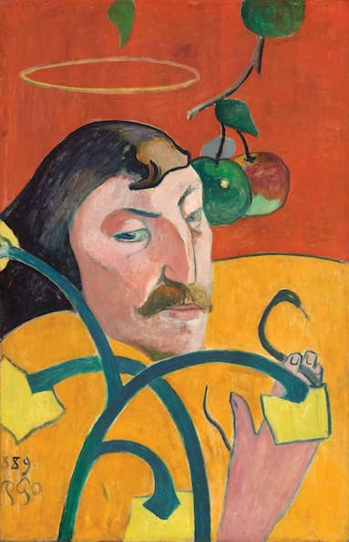

Piet Mondrian was born Pieter Cornelis Mondriaan in 1872 in Amersfoort, the Netherlands.
The house in Amersfoort where Mondrian spent his early childhood.
In 1892, at age 20, he attended the Rijksakademie van beeldende kunsten (State Academy of Fine Arts) in Amsterdam.
The Rijksakademie van beeldende kunsten.
The artist as a young man.
Between 1893 and 1907, the primary influence on Mondrian was the Dutch Hague school of painting.
Anton Mauve (c.1870 - c.1888), Shepherdess with a Flock of Sheep
The Hague school typically painted natural and rural scenes with a sombre, muted palette, emphasizing tonalities of grey. The intention was to create a diffuse, atmospheric quality.
Jacob Maris (b. 1899), Village near Schiedam
Mondrian was also influenced by the more daring work of the Impressionists and Post-Impressionists.
Edgar Degas (1886), Woman in a Tub
Similarly to the Dutch Hague school, the Impressionists were interested in capturing the light and physical atmosphere of a setting using loose, blended brushstrokes, although the Impressionists tended to take this idea to more avant-garde extremes.
Berthe Morisot (1884), Le jardin à Bougival
Claude Monet (1872), Impression, Sunrise
The Post-Impressionists expanded the horizon of painting even further by focusing on emotional atmosphere...
Vincent van Gogh (1888), The Night Cafe
...more bold uses of color...

Paul Gauguin (1889), self-portrait
...as well as a reduction of figures to more basic forms.
Paul Cezanne (1897), Montagne Sainte-Victoire seen from the Bibémus Quarry
Overall, Mondrian's early work stuck closer to the more traditional approach of the Dutch Hague school, painting rural scenes with a muted palette and blurred, diffuse lighting, but with not quite as radical an aesthetic as the Impressionists or Post-Impressionists.
Piet Mondrian (1895), Farmyard with Laundry and Logs
Piet Mondrian (1901 - 1902), Evening on the Weesperzijde
At times, Mondrian leaned into a darker, somewhat moodier palette.
Piet Mondrian (1898), Land
Piet Mondrian (1905 - 1907), Stammer Mill with Streaked Sky
At other times, he allowed more vivid colors to emerge.